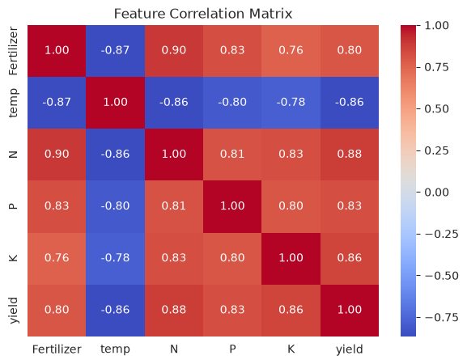
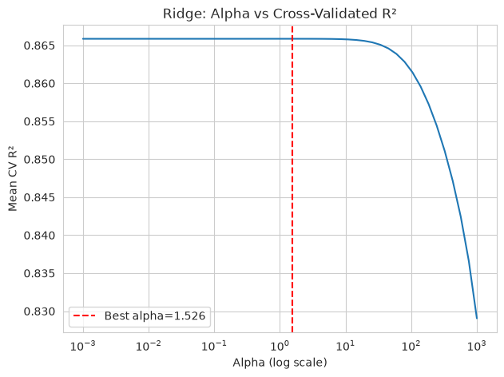
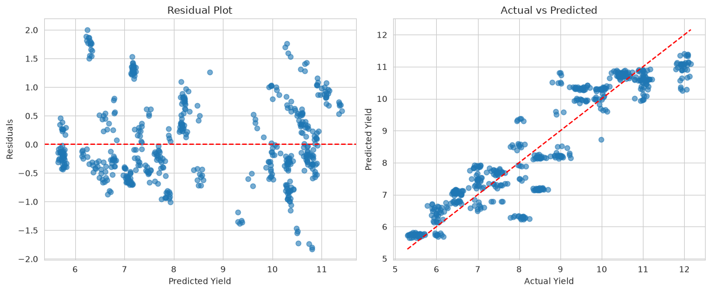
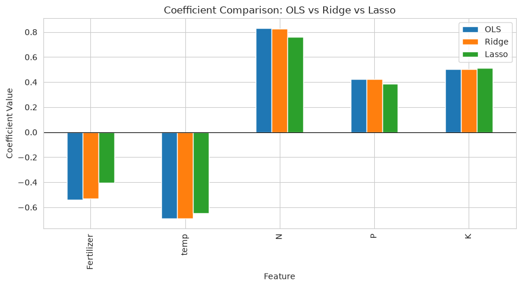
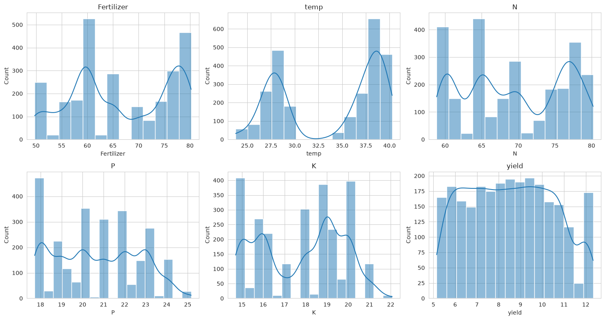
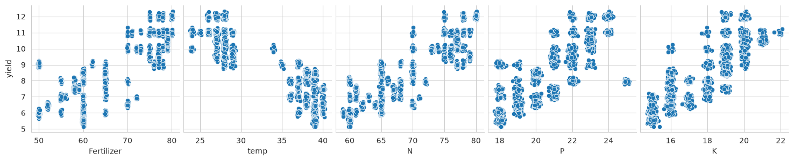

Crop Yield Prediction using Regularized Ridge Regression
Predicting agricultural crop yield (tons/hectare) from soil macronutrients (Nitrogen, Phosphorus, Potassium), gross fertilizer, and ambient temperature. Implemented L2 weight shrinkage to resolve predictor multicollinearity, benchmarked against Ordinary Least Squares, Lasso, and ElasticNet.
Field Yield Estimation Calculator
Adjust soil nutrient levels and temperature to simulate real-time Ridge model predictions and observe parameter contributions.
Soil Chemistry & Weather Inputs
Model Input Vector XPredicted Crop Yield
Standardized Model OutputThe Ridge Formulation & Multicollinearity Mitigation
Soil macronutrients (Nitrogen, Phosphorus, and Potassium) naturally exhibit strong linear dependencies in real-world agricultural datasets (inter-correlation coefficients range between r = 0.69 and r = 0.78). When features are collinear, standard Ordinary Least Squares (OLS) normal equations (XᵀX)⁻¹ become ill-conditioned, yielding inflated coefficient variance and erratic predictions.
min_w ||y - Xw||²₂ + α ||w||²₂
Adds an L2 penalty on the sum of squared weights, shrinking coefficients towards zero and reducing generalization error.
ŵ_ridge = (XᵀX + α·I)⁻¹ Xᵀy
Adding α·I shifts eigenvalues away from zero, making matrix inversion numerically stable even under extreme collinearity.
z_i = (x_i - μ_i) / σ_i
Because the L2 penalty is isotropic, unscaled features with larger ranges would receive unfairly low shrinkage penalties.
Comparative Algorithm Evaluation
Test Partition (n=520)| Model | Test R² | RMSE (t/ha) | MAE (t/ha) |
|---|---|---|---|
| Ridge Regression (L2) ★ | 0.8627 | 0.7182 | 0.5793 |
| Lasso Regression (L1) | 0.8637 | 0.7157 | 0.5823 |
| ElasticNet (L1 + L2) | 0.8636 | 0.7159 | 0.5821 |
| Linear Regression (OLS) | 0.8626 | 0.7185 | 0.5791 |
Why select Ridge over Lasso? While Lasso achieves a marginally comparable R² (0.8637), its L1 norm penalty drives coefficients to zero. In agronomic field management, all soil nutrients are essential for crop biology; Ridge preserves every predictor while stabilizing collinear variance.
Standardized Feature Coefficients
Ridge vs Linear OLS- Nitrogen (+0.83): The dominant positive contributor to overall biomass and grain development.
- Potassium (+0.50) & Phosphorus (+0.42): Vital positive co-factors supporting osmotic regulation and root development.
- Temperature (-0.69): Severe negative driver, reflecting significant thermal heat stress above 35°C.
- Fertilizer (-0.53): Shows a negative net weight when active NPK levels are held constant, reflecting chemical fertilizer overdose.
Notebook Figures & Validation Artifacts
Diagnostic plots directly exported from Ridge_Regression_Crop_Yieldd.ipynb during the experimental training run.






Test Set Observation Inspector
Sample test set observations comparing ground truth actual yield with Ridge model predictions and residual error.
| Observation ID | Fertilizer (kg/ha) | Temp (°C) | Nitrogen (N) | Phosphorus (P) | Potassium (K) | Actual Yield | Ridge Predicted | Residual Error |
|---|